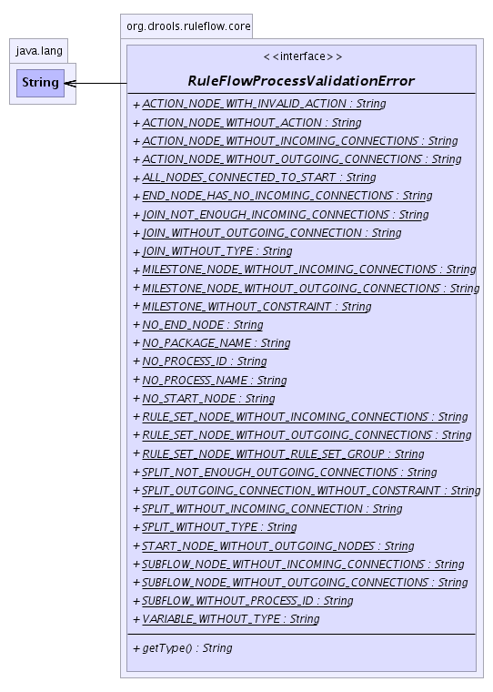

org.drools.ruleflow.core
Interface RuleFlowProcessValidationError
- All Known Implementing Classes:
- RuleFlowProcessValidationErrorImpl
public interface RuleFlowProcessValidationError
Represents a RuleFlow validation error.
-
- 
|
Method Summary |
java.lang.String |
getType()
|
NO_PROCESS_NAME
static final java.lang.String NO_PROCESS_NAME
- See Also:
- Constant Field Values
NO_PROCESS_ID
static final java.lang.String NO_PROCESS_ID
- See Also:
- Constant Field Values
NO_START_NODE
static final java.lang.String NO_START_NODE
- See Also:
- Constant Field Values
NO_PACKAGE_NAME
static final java.lang.String NO_PACKAGE_NAME
- See Also:
- Constant Field Values
START_NODE_WITHOUT_OUTGOING_NODES
static final java.lang.String START_NODE_WITHOUT_OUTGOING_NODES
- See Also:
- Constant Field Values
END_NODE_HAS_NO_INCOMING_CONNECTIONS
static final java.lang.String END_NODE_HAS_NO_INCOMING_CONNECTIONS
- See Also:
- Constant Field Values
NO_END_NODE
static final java.lang.String NO_END_NODE
- See Also:
- Constant Field Values
RULE_SET_NODE_WITHOUT_INCOMING_CONNECTIONS
static final java.lang.String RULE_SET_NODE_WITHOUT_INCOMING_CONNECTIONS
- See Also:
- Constant Field Values
RULE_SET_NODE_WITHOUT_OUTGOING_CONNECTIONS
static final java.lang.String RULE_SET_NODE_WITHOUT_OUTGOING_CONNECTIONS
- See Also:
- Constant Field Values
RULE_SET_NODE_WITHOUT_RULE_SET_GROUP
static final java.lang.String RULE_SET_NODE_WITHOUT_RULE_SET_GROUP
- See Also:
- Constant Field Values
SPLIT_WITHOUT_TYPE
static final java.lang.String SPLIT_WITHOUT_TYPE
- See Also:
- Constant Field Values
SPLIT_WITHOUT_INCOMING_CONNECTION
static final java.lang.String SPLIT_WITHOUT_INCOMING_CONNECTION
- See Also:
- Constant Field Values
SPLIT_NOT_ENOUGH_OUTGOING_CONNECTIONS
static final java.lang.String SPLIT_NOT_ENOUGH_OUTGOING_CONNECTIONS
- See Also:
- Constant Field Values
SPLIT_OUTGOING_CONNECTION_WITHOUT_CONSTRAINT
static final java.lang.String SPLIT_OUTGOING_CONNECTION_WITHOUT_CONSTRAINT
- See Also:
- Constant Field Values
JOIN_WITHOUT_TYPE
static final java.lang.String JOIN_WITHOUT_TYPE
- See Also:
- Constant Field Values
JOIN_NOT_ENOUGH_INCOMING_CONNECTIONS
static final java.lang.String JOIN_NOT_ENOUGH_INCOMING_CONNECTIONS
- See Also:
- Constant Field Values
JOIN_WITHOUT_OUTGOING_CONNECTION
static final java.lang.String JOIN_WITHOUT_OUTGOING_CONNECTION
- See Also:
- Constant Field Values
VARIABLE_WITHOUT_TYPE
static final java.lang.String VARIABLE_WITHOUT_TYPE
- See Also:
- Constant Field Values
ALL_NODES_CONNECTED_TO_START
static final java.lang.String ALL_NODES_CONNECTED_TO_START
- See Also:
- Constant Field Values
MILESTONE_NODE_WITHOUT_INCOMING_CONNECTIONS
static final java.lang.String MILESTONE_NODE_WITHOUT_INCOMING_CONNECTIONS
- See Also:
- Constant Field Values
MILESTONE_NODE_WITHOUT_OUTGOING_CONNECTIONS
static final java.lang.String MILESTONE_NODE_WITHOUT_OUTGOING_CONNECTIONS
- See Also:
- Constant Field Values
MILESTONE_WITHOUT_CONSTRAINT
static final java.lang.String MILESTONE_WITHOUT_CONSTRAINT
- See Also:
- Constant Field Values
SUBFLOW_NODE_WITHOUT_INCOMING_CONNECTIONS
static final java.lang.String SUBFLOW_NODE_WITHOUT_INCOMING_CONNECTIONS
- See Also:
- Constant Field Values
SUBFLOW_NODE_WITHOUT_OUTGOING_CONNECTIONS
static final java.lang.String SUBFLOW_NODE_WITHOUT_OUTGOING_CONNECTIONS
- See Also:
- Constant Field Values
SUBFLOW_WITHOUT_PROCESS_ID
static final java.lang.String SUBFLOW_WITHOUT_PROCESS_ID
- See Also:
- Constant Field Values
ACTION_NODE_WITHOUT_INCOMING_CONNECTIONS
static final java.lang.String ACTION_NODE_WITHOUT_INCOMING_CONNECTIONS
- See Also:
- Constant Field Values
ACTION_NODE_WITHOUT_OUTGOING_CONNECTIONS
static final java.lang.String ACTION_NODE_WITHOUT_OUTGOING_CONNECTIONS
- See Also:
- Constant Field Values
ACTION_NODE_WITHOUT_ACTION
static final java.lang.String ACTION_NODE_WITHOUT_ACTION
- See Also:
- Constant Field Values
ACTION_NODE_WITH_INVALID_ACTION
static final java.lang.String ACTION_NODE_WITH_INVALID_ACTION
- See Also:
- Constant Field Values
getType
java.lang.String getType()